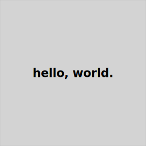

Utilities
These utilities are unsupported and of limited use.
- poco-dir-upate copies the master
.pocodirectory into the current project. - poco-gen-theme-test generates a number of pages to demonstrate theme features such as headers, asides, footers, and so on.
- svgplace generates placeholder image files
poco-dir-update
A Bash/zsh script to copy the contents of the application's .poco directory
to the current project. It's useful in the following circumstances:
- You've made changes to themes in the
poco-gen-theme-test
A Bash/zsh script to show theme options. It generates Markdown files to exercise many options available in a theme, generates a page for each option, then creates a site in a temporary directory so you can see them for yourself. (The operating system eventually deletes the temporary directory so you don't need to dispose of it.)
Some of the options it creates:
- Article only with no header, nav, aside, or footer
- Header suppressed
- Nav suppressed
- Footer suppressed
- Aside suppressed
- Aside on left
- Aside on right
- Version with background shaded on all page layout elements
- And more.
Just run it from the command line followed by the name of a theme,
like this, where you'd replace pocodocs with whatever theme
you wish to try:
poco-gen-theme-test pocodocs
By the way, you can see what themes are installed in your project like this:
poco -themes
svgplace
The svgplace Bash/zsh script generates a placeholder SVG file in the shape of a box, with optional text inside.
The command line options are, in order:
- Width
- Height
- Text in quotes
- Filename
They are all optional with default values.
Example invocations:
# Create a 256x128 empty box with the filename foo.svg
svgplace
Result:
# Create a 200x200 empty box with the filename foo.svg
svgplace 200 200
Result:
# Create a 300x300 box with the text "hello, world."
svgplace 300 300 "hello, world." box.svg
